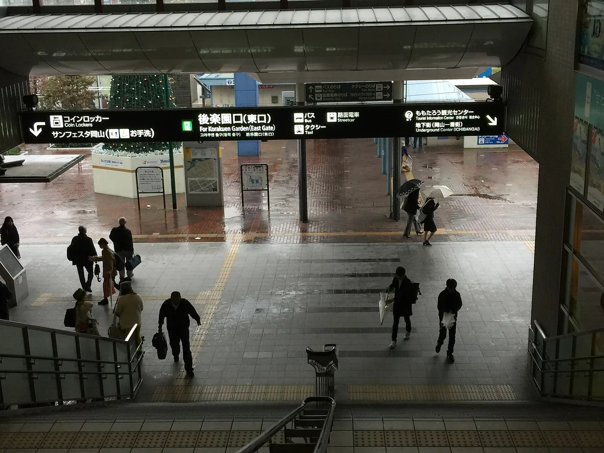

Okayama Travel Guide for Japanese Learners
A great garden, a 'crow castle', and the canal town of Kurashiki.

Sunny Okayama is home to Kōraku-en, one of Japan's three great gardens, and the picturesque Bikan canal district of Kurashiki. It's linked to the Momotarō peach-boy legend.
History & background
Okayama (岡山) tied its identity to the Momotarō (桃太郎) peach-boy legend. Kōraku-en (後楽園), laid out in 1700, ranks among Japan's three great gardens, beside the black-walled 'Crow Castle'.
What to see
- Kōraku-en garden and Okayama Castle
- Kurashiki Bikan historical quarter
- Washūzan views of the Seto bridges
- Kibitsu Shrine
Hidden gems
- Bitchu Takahashi Castle ruins offer spectacular mountain views and fewer crowds than Okayama Castle, rewarding a short train ride and hike.
- Onomichi, a nearby canal town in Hiroshima Prefecture, feels less polished than Kurashiki but showcases authentic temple-lined streets and local life.
- Hayashibara Museum of Art displays rotating Japanese paintings and calligraphy in an intimate setting near Okayama Castle's grounds, often overlooked by tourists.
Some links above are affiliate links. We may earn a commission at no extra cost to you. We only list services we'd use ourselves.
What to eat
Peaches, muscat grapes, and barazushi.
Getting there & when to go
Getting there: Okayama is ~3h15m from Tokyo and ~45 min from Osaka by shinkansen.
Best time: Summer for peaches and muscat grapes; any season for the gardens.
When to go — season by season
Sunny most of the year (Okayama markets itself as the 'Land of Sunshine'). Summer brings peaches and muscat grapes; the gardens are lovely spring through autumn.
Local culture
Okayama's barazushi (scattered sushi) tradition reflects Edo-period practicality—ingredients scattered over rice rather than individually wrapped, letting diners customize each bite. You'll notice this casual approach at local restaurants and festivals.
Local pottery workshops still thrive in rural valleys around Okayama. Visitors often encounter working kilns and can purchase directly from artisans, observing the rustic Bizen ware technique passed through generations.
A suggested visit
Pair Kōraku-en with adjacent Okayama Castle (岡山城), then take the train to Kurashiki (倉敷) to stroll the willow-lined Bikan (美観) canal quarter. Okayama is also the gateway to Shikoku's art islands.
Seasonal tip: Visit Kōraku-en in November for autumn maples with minimal summer humidity and crowds; August heat (often 35°C+) makes prolonged garden walks exhausting.
Local etiquette: At Kōraku-en, stay on marked paths and avoid stepping on the moss-covered ground near water features—it's fragile and essential to the garden's ecosystem.
Okayama is the gateway to Shikoku's art islands via the Seto-Ōhashi bridge.
Some links above are affiliate links. We may earn a commission at no extra cost to you. We only list services we'd use ourselves.
Common questions
Q. How do I get to Okayama from major cities?
A. Okayama is 3 hours 15 minutes from Tokyo and 45 minutes from Osaka by shinkansen. The shinkansen station connects directly to local trains, making onward travel to Kurashiki very convenient.
Q. What's the best time to visit Okayama?
A. Summer is ideal for sampling local peaches and muscat grapes at their peak. However, Kōraku-en garden is stunning year-round, so any season works if you're primarily interested in sightseeing.
Q. Is Okayama Castle really called the 'crow castle'?
A. Yes—Okayama Castle's distinctive black exterior earned it the nickname 'crow castle.' It stands near Kōraku-en, so you can easily visit both in one day without doubling back.